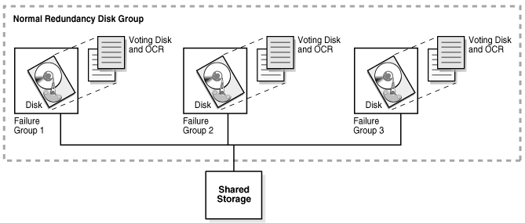
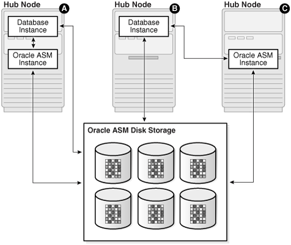
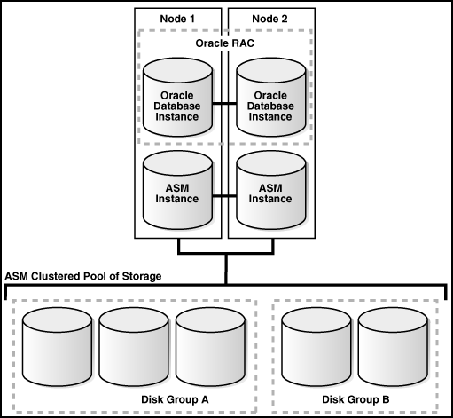

1 Introduction to Deploying a Real Application Clusters Environment
Oracle Real Application Clusters (Oracle RAC) enables an Oracle database to run across a cluster of servers, providing fault tolerance, performance, and scalability with no application changes necessary.
Oracle RAC provides high availability for applications by removing the single point of failure with a single server.
Topics:
- About the 2 Day + Real Application Clusters Guide
This guide is a task-oriented guide for Oracle Real Application Clusters (Oracle RAC) database administration. - About Oracle Grid Infrastructure for a Cluster and Oracle RAC
Oracle Grid Infrastructure for a cluster refers to the installation of the combined products. Oracle Clusterware and Oracle ASM are still individual products, and are referred to by those names. - About Oracle Automatic Storage Management
Oracle Automatic Storage Management (Oracle ASM) is an integrated, high-performance volume manager and file system. - About Oracle Real Application Clusters
Oracle RAC extends Oracle Database so that you can store, update, and efficiently retrieve data using multiple database instances on different servers at the same time. - Tools for Installing, Configuring, and Managing Oracle RAC
There are different tools used for installing, configuring, and managing Oracle Clusterware, Oracle Automatic Storage Management (Oracle ASM), and Oracle Real Application Clusters (Oracle RAC).
1.1 About the 2 Day + Real Application Clusters Guide
This guide is a task-oriented guide for Oracle Real Application Clusters (Oracle RAC) database administration.
This guide shows you how to configure and manage the environment for Oracle Clusterware and Oracle RAC. The administration procedures and examples in this guide assume Oracle Linux is the operating system. For the purposes of this guide, a two-node cluster is used in the procedures and examples.
The goal of this guide is to help you understand the basic steps required to install and maintain an Oracle RAC environment, including how to perform basic troubleshooting, performance monitoring, and backup and recovery activities. This guide is based on Oracle Linux, but you do not have to be a Linux expert to use this guide.
Topics:
- What This Guide Is Not
The 2 Day + Real Application Clusters Guide is not a comprehensive description of Oracle Real Application Clusters (Oracle RAC). It describes concepts only when necessary for completing a particular task. - Related Materials
The 2 Day + Real Application Clusters Guide is part of a comprehensive set of learning materials for administering Oracle Databases - Overview of Oracle RAC Documentation
The 2 Day + Real Application Clusters Guide describes how to install, configure, and manage Oracle Real Application Clusters (Oracle RAC) and Oracle Clusterware.
1.1.1 What This Guide Is Not
The 2 Day + Real Application Clusters Guide is not a comprehensive description of Oracle Real Application Clusters (Oracle RAC). It describes concepts only when necessary for completing a particular task.
See Also:
Oracle Real Application Clusters Administration and Deployment Guide for a detailed description of Oracle RAC concepts
1.1.2 Related Materials
The 2 Day + Real Application Clusters Guide is part of a comprehensive set of learning materials for administering Oracle Databases
The learning materials include a 2 Day DBA Oracle By Example (OBE) series, available on Oracle Technology Network, and Oracle University instructor-led classes. The OBE series also has animated demos you view using a web browser.
You can view the OBE content for Oracle Database and Oracle RAC at the following website:
1.1.3 Overview of Oracle RAC Documentation
The 2 Day + Real Application Clusters Guide describes how to install, configure, and manage Oracle Real Application Clusters (Oracle RAC) and Oracle Clusterware.
This guide provides examples for how you could deploy Oracle RAC on a two-node cluster, using the Oracle Linux operating system. Oracle Linux is fully compatible — both source and binary — with Red Hat Enterprise Linux. It includes the identical set of packages at the same version levels with the same source code as the Red Hat distribution.
This guide is for DBAs who have experience with single-instance Oracle environments and have read Oracle Database 2 Day DBA.
Topics:
- Useful Oracle RAC Guides
Oracle provides a comprehensive set of documentation for Oracle Real Application Clusters (Oracle RAC). - Other Useful Oracle Documentation
In addition to the Oracle Database 2 Day DBA guide, there are many other books that are referenced when performing DBA tasks.
1.1.3.1 Useful Oracle RAC Guides
Oracle provides a comprehensive set of documentation for Oracle Real Application Clusters (Oracle RAC).
The following list contains useful related documentation:
-
Oracle Real Application Clusters Administration and Deployment Guide
-
Oracle Real Application Clusters Installation Guide for Linux and UNIX (or other operating system)
-
Oracle Grid Infrastructure Installation and Upgrade Guide for Linux (or other operating system)
1.1.3.2 Other Useful Oracle Documentation
In addition to the Oracle Database 2 Day DBA guide, there are many other books that are referenced when performing DBA tasks.
The following list displays other books in the Oracle documentation library that were referenced within this guide:
1.2 About Oracle Grid Infrastructure for a Cluster and Oracle RAC
Oracle Grid Infrastructure for a cluster refers to the installation of the combined products. Oracle Clusterware and Oracle ASM are still individual products, and are referred to by those names.
Oracle Clusterware and Oracle ASM are installed into a single home directory, which is called the Grid home.
Oracle Clusterware enables servers, referred to as hosts or nodes, to operate as if they are one server, commonly referred to as a cluster. Although the servers are standalone servers, each server has additional processes that communicate with other servers. In this way the separate servers appear as if they are one server to applications and end users. Oracle Clusterware provides the infrastructure necessary to run Oracle RAC. The combined processing power of the multiple servers provides greater availability, throughput, and scalability than is available from a single server.
The nodes in a cluster can be organized into a server pool for better resource management. Each server pool has the following properties:
-
The minimum number of nodes that should be in the server pool
-
The maximum number of nodes that can be in the server pool
-
The relative importance of this server pool to other server pools
Upon installation of Oracle Grid Infrastructure for a cluster, a default server pool, called the Free pool, is created automatically. All servers in a new installation are assigned to the Free server pool, initially. If you create a new server pool, then the servers move from the Free pool to the new server pool automatically.
When you create an Oracle RAC database that is a policy-managed database, you specify the number of servers that are needed for the database, and a server pool is automatically created for the database. Oracle Clusterware populates the server pool with the servers it has available. If you do not use server pools, then you create an administrator-managed database.
1.3 About Oracle Automatic Storage Management
Oracle Automatic Storage Management (Oracle ASM) is an integrated, high-performance volume manager and file system.
Oracle ASM supports storing the Oracle Clusterware OCR and voting disk files, and also provides a general purpose cluster file system called Oracle Automatic Storage Management Cluster File System (Oracle ACFS). Oracle ASM is based on the principle that the database should manage storage instead of requiring an administrator to do it. Oracle ASM eliminates the need for you to directly manage potentially thousands of Oracle database files.
Topics:
- About Using Oracle ASM Disk Groups with Oracle RAC
Oracle ASM groups the disks in your storage system into one or more disk groups. You manage a small set of disk groups and Oracle ASM automates the placement of the database files within those disk groups. - Benefits of Using Oracle ASM
Oracle ASM reduces the administrative overhead for managing database storage by consolidating data storage into a small number of disk groups. Oracle ASM disk groups provide a number of additional benefits. - About Oracle Flex ASM
Oracle Flex ASM enables an Oracle ASM instance to run on a separate physical server from the database servers. - About Oracle ACFS
Oracle Automatic Storage Management Cluster File System (Oracle ACFS) is a multi-platform, scalable file system, and storage management technology that extends Oracle Automatic Storage Management (Oracle ASM) functionality to support all customer files. - About Oracle ASM Running in an Oracle RAC Environment
In an Oracle RAC environment, Oracle ASM has multiple instances which run on one or more nodes in the cluster.
1.3.1 About Using Oracle ASM Disk Groups with Oracle RAC
Oracle ASM groups the disks in your storage system into one or more disk groups. You manage a small set of disk groups and Oracle ASM automates the placement of the database files within those disk groups.
Oracle Cluster Registry (OCR) and voting disks must be placed on Oracle ASM disk groups. When using Oracle Real Application Clusters (Oracle RAC), each instance must have access to the data files and recovery files for the Oracle RAC database. Using Oracle ASM is an easy way to satisfy this requirement.
In the following figure, the normal redundancy disk group stored in Oracle ASM contains three failure groups (shown as three disks) to store the voting disk and OCR files for Oracle Clusterware. Because the voting disk records which nodes are currently members of the cluster, there must be at least three voting disks for a two-node cluster. If the Oracle ASM disk group did not contain the voting disk and OCR files, then you could have a normal redundancy disk group with only two failure groups.
Figure 1-1 Oracle Clusterware Files Stored in an Oracle ASM Disk Group
Description of "Figure 1-1 Oracle Clusterware Files Stored in an Oracle ASM Disk Group"
1.3.2 Benefits of Using Oracle ASM
Oracle ASM reduces the administrative overhead for managing database storage by consolidating data storage into a small number of disk groups. Oracle ASM disk groups provide a number of additional benefits.
Oracle ASM provides the following benefits:
-
Striping—Oracle ASM spreads data evenly across all disks in a disk group to optimize performance and utilization. This even distribution of database files eliminates the need for regular monitoring and I/O performance tuning.
-
Mirroring—Oracle ASM increases data availability by optionally mirroring any file. Oracle ASM mirrors at the file level, unlike operating system mirroring, which mirrors at the disk level. Mirroring means keeping redundant copies, or mirrored copies, of each extent of the file, to help avoid data loss caused by disk failures. The mirrored copy of each file extent is always kept on a different disk from the original copy. If a disk fails, then Oracle ASM continues to access affected files by accessing mirrored copies on the surviving disks in the disk group.
-
Online storage reconfiguration and dynamic rebalancing—When using Oracle ASM, you can add or remove disks from your disk storage system while the database is operating. When you add a disk to a disk group, Oracle ASM automatically redistributes the data so that it is evenly spread across all disks in the disk group, including the new disk. The process of redistributing data so that it is also spread across the newly added disks is known as rebalancing. It is done in the background and with minimal impact to database performance.
-
Managed file creation and deletion—Oracle ASM further reduces administration tasks by enabling files stored in Oracle ASM disk groups to be managed by Oracle Database. Oracle ASM automatically assigns file names when files are created, and automatically deletes files when they are no longer needed by the database.
1.3.3 About Oracle Flex ASM
Oracle Flex ASM enables an Oracle ASM instance to run on a separate physical server from the database servers.
With Oracle Flex ASM, you can consolidate all the storage requirements into a single set of disk groups. All these disk groups are mounted by and managed by a small set of Oracle ASM instances running in a single cluster. With this deployment, larger clusters of Oracle ASM instances can support more database clients while reducing the Oracle ASM footprint for the overall system. You can specify the number of Oracle ASM instances with a cardinality setting. The default is three instances.
For the Oracle RAC deployment described in this guide, Oracle Flex ASM is configured as local Oracle ASM clients with direct access to Oracle ASM disk. This supports the previous standard architecture in which database clients run with an Oracle ASM instance on the same server. Each server must be configured as a Hub node in the cluster. Communication with the Oracle ASM instances is performed using a private network interface, which can be either a dedicated Oracle ASM network interface, or the same network interface as the cluster private network.
In a larger cluster with Oracle Flex ASM you can have nodes running database instances, but not Oracle ASM instances. Database clients that are running on Hub nodes of the Oracle ASM cluster access Oracle ASM remotely for metadata, but perform block I/O operations directly to Oracle ASM disks. A Hub node is a node in an Oracle ASM cluster that is tightly connected with other servers and has direct access to a shared disk. Depending on the distribution of database instances and Oracle ASM instances, a database client may access Oracle ASM locally on the same node or remotely over the Oracle ASM network.
Figure 1-2 Oracle ASM Flex Client Configurations
Description of "Figure 1-2 Oracle ASM Flex Client Configurations"
1.3.4 About Oracle ACFS
Oracle Automatic Storage Management Cluster File System (Oracle ACFS) is a multi-platform, scalable file system, and storage management technology that extends Oracle Automatic Storage Management (Oracle ASM) functionality to support all customer files.
Oracle ACFS supports Oracle Database files and application files, including executables, database data files, database trace files, database alert logs, application reports, BFILEs, and configuration files. Other supported files are video, audio, text, images, engineering drawings, and all other general-purpose application file data. Oracle ACFS conforms to POSIX standards for Linux and UNIX, and to Windows standards for Windows.
An Oracle ACFS file system communicates with Oracle ASM and is configured with Oracle ASM storage. Oracle ACFS leverages Oracle ASM functionality that enables:
-
Oracle ACFS dynamic file system resizing
-
Maximized performance through direct access to Oracle ASM disk group storage
-
Balanced distribution of Oracle ACFS across Oracle ASM disk group storage for increased I/O parallelism
-
Data reliability through Oracle ASM mirroring protection mechanisms
1.3.5 About Oracle ASM Running in an Oracle RAC Environment
In an Oracle RAC environment, Oracle ASM has multiple instances which run on one or more nodes in the cluster.
Oracle ASM is implemented as a special kind of Oracle instance, with its own System Global Area and background processes.
Starting with Oracle Grid Infrastructure 12c Release 1 (12.1), as part of an Oracle Flex Cluster installation, Oracle ASM is installed in an Oracle Flex ASM cluster. Each Oracle Flex ASM cluster has its own name that is globally unique within the enterprise. Every Oracle Flex ASM cluster has one or more Hub Nodes on which Oracle ASM instances are running
Oracle Flex ASM enables an Oracle ASM instance to run on a separate physical server from the database servers. Many Oracle ASM instances can be clustered to support numerous database clients. You can consolidate all the storage requirements into a single set of disk groups. All these disk groups are managed by a small set of Oracle ASM instances running in a single Oracle Flex Cluster.
The following figure shows the storage configuration commonly used for a 2-node Oracle RAC database.
Figure 1-3 Oracle Instances and Oracle ASM Storage
Description of "Figure 1-3 Oracle Instances and Oracle ASM Storage"
Oracle recommends that you use Oracle ASM for your Oracle Clusterware files and Oracle RAC data files. Oracle databases can use both Oracle ASM files and non-Oracle ASM files. You can also create a file system using Oracle ACFS to store your database Oracle Home and any other external (non-database) files in the cluster.
See Also:
-
About Oracle Clusterware for information about Oracle Clusterware files
-
Oracle Automatic Storage Management Administrator's Guide for information about Oracle ASM concepts and features
1.4 About Oracle Real Application Clusters
Oracle RAC extends Oracle Database so that you can store, update, and efficiently retrieve data using multiple database instances on different servers at the same time.
Oracle RAC provides the software that manages multiple servers and instances as a single group. The data files that comprise the database must reside on shared storage that is accessible from all servers that are part of the cluster. Each server in the cluster runs the Oracle RAC software.
An Oracle database has a one-to-one relationship between data files and the database instance. An Oracle RAC database, however, has a one-to-many relationship between data files and database instances. In an Oracle RAC database, multiple instances access a single set of database files.
Each database instance in an Oracle RAC database uses its own memory structures and background processes. Oracle RAC uses Cache Fusion to synchronize the data stored in the buffer cache of each database instance. Cache Fusion moves current data blocks (which reside in memory) between database instances, rather than having one database instance write the data blocks to disk and requiring another database instance to reread the data blocks from disk. When one instance requires a data block located in the buffer cache of another instance, Cache Fusion transfers the data block directly between the instances using the interconnect , enabling the Oracle RAC database to access and modify data as if the data resided in a single buffer cache.
Oracle RAC is also a key component for implementing the enterprise grid computing architecture using Oracle software. Having multiple database instances accessing a single set of data files prevents the server from being a single point of failure. If a node in the cluster fails, then the Oracle database continues running on the remaining nodes. Individual nodes can be stopped for maintenance while application users continue to work.
Oracle RAC supports mainstream business applications, such as OLTP, DSS, and also popular packaged products such as SAP, PeopleSoft, Siebel, and Oracle E-Business Suite, and custom applications. Any packaged or custom application that scales on an Oracle database scales well on Oracle RAC without requiring changes to the application code.
You will learn more about the operation of the Oracle RAC database in a cluster, how to build the cluster, and the structure of an Oracle RAC database in other sections of this guide.
Topics:
- About Oracle RAC One Node
Oracle RAC One Node is a single instance of an Oracle RAC-enabled database running on one node in the cluster, only, under normal operations. - About Oracle Multitenant with Oracle RAC
Oracle Multitenant is based on an architecture that allows a multitenant container database (CDB) to hold several pluggable databases (PDBs). - About Server Pools
Understand the server pool concepts in Oracle Real Application Clusters (Oracle RAC) environments. - About Installing Oracle RAC on Different Operating Systems
Oracle Real Application Clusters is supported on a variety of different operating systems.
See Also:
-
Oracle Real Application Clusters Administration and Deployment Guide for more information about Oracle RAC concepts and architecture
-
Oracle Clusterware Administration and Deployment Guide for more information about Oracle Clusterware concepts and architecture
1.4.1 About Oracle RAC One Node
Oracle RAC One Node is a single instance of an Oracle RAC-enabled database running on one node in the cluster, only, under normal operations.
Oracle Real Application Clusters One Node (Oracle RAC One Node) is an option to Oracle Database Enterprise Edition available since Oracle Database 11g release 2 (11.2). This option adds to the flexibility that Oracle offers for database consolidation while reducing management overhead by providing a standard deployment for Oracle databases in the enterprise. Oracle RAC One Node database requires Oracle Grid Infrastructure and, therefore, requires the same hardware setup as an Oracle RAC database.
Unlike Oracle RAC, Oracle RAC One Node normally has only one instance that accesses a shared set of data files, also known as the database. This database is fully Oracle RAC-enabled, but does not span multiple hardware systems at the same time. Instead, the Oracle RAC One Node database instance fails over to another server in the cluster if a server, instance or a related and monitored component on this server fails. With Oracle RAC One Node, there is no limit to server scalability and, if applications grow to require more resources than a single node can supply, then you can upgrade your applications online to Oracle RAC. If the node that is running Oracle RAC One Node becomes overloaded, then you can relocate the instance to another node in the cluster.
For cases of planned downtime such as operating system or database patching, Oracle RAC One Node provides a unique feature, Online Database Relocation, which allows relocating a database from one server to another without interrupting the database service. With Oracle RAC One Node you can use the Online Database Relocation feature to relocate the database instance with no downtime for application users.
See Also:
-
Oracle Real Application Clusters Administration and Deployment Guide for more information about Oracle RAC One Node
1.4.2 About Oracle Multitenant with Oracle RAC
Oracle Multitenant is based on an architecture that allows a multitenant container database (CDB) to hold several pluggable databases (PDBs).
Oracle Multitenant is an option with Oracle Database 12c that simplifies consolidation, provisioning, upgrades, and more. You can adopt an existing database as a PDB without having to change the application tier. In this architecture, Oracle RAC provides the local high availability that is required when consolidating various business-critical applications on one system.
When using PDBs with Oracle RAC, the multitenant CDB is based on Oracle RAC. This means for the CDB database, there is an instance running on multiple nodes in the cluster. You can make each PDB available on either every instance of the Oracle RAC CDB or a subset of instances. In either case, access to and management of the PDBs are regulated using dynamic database services, which are also used by applications to connect to the respective PDB.
If you create an Oracle RAC database as a CDB and plug one or more PDBs into the CDB, then, by default, a PDB is not started automatically on any instance of the Oracle RAC CDB. When you assign the first dynamic database service to the PDB (other than the default database service which has the same name as the database name), then the PDB is made available on those instances on which the service runs.
Whether a PDB is available on more than one instance of an Oracle RAC CDB, the CDB is typically managed by the services running on the PDB. You can manually enable PDB access on each instance of an Oracle RAC CDB by starting the PDB manually on that instance.
1.4.3 About Server Pools
Understand the server pool concepts in Oracle Real Application Clusters (Oracle RAC) environments.
When Oracle Clusterware is installed, two internal server pools are created automatically: Generic and Free. All servers in a new installation are assigned to the Free server pool, initially. Servers move from Free to newly defined server pools automatically.
Server pools provide resource isolation to prevent applications running in one server pool from accessing resources running in another server pool. Oracle Clusterware provides fine-grained role separation between server pools. This capability maintains required management role separation between these groups in organizations that have clustered environments managed by separate groups.
Oracle RAC databases support two types of server pool management styles and deployment models: Policy-based management and administrator-managed.
-
Oracle RAC One Node runs only in one server pool. This server pool is treated the same as any other server pool.
-
Online relocation of an Oracle RAC One Node database instance permits planned migrations of an Oracle RAC One Node database from one node to another node. Relocations must always be within a server pool.
Policy-Based Management of Oracle RAC Databases
With policy-based management, administrators specify the server pool (excluding the Generic and Free pools) in which the servers run. For example, a database administrator uses SRVCTL to create a server pool for servers hosting a database or database service. A clusterware administrator uses CRSCTL to create server pools for non-database use, such as creating a server pool for servers hosting an application.
You can configure each server pool with a minimum and maximum size, which determines scalability. Oracle Clusterware manages availability between server pools, and you can further regulate availability by configuring the importance value of individual server pools.
Policy-based management:
-
Enables online server reallocation based on a defined policy to satisfy workload capacity requirements
-
Guarantees the allocation of required resources for critical work as defined by the policy
-
Ensures isolation where necessary, so that you can provide dedicated servers in a cluster for applications and databases
-
Enables policies to be configured to change pools in accordance with business needs or application demand, so that pools provide the required capacity at the right time
Administrator-Managed Oracle RAC Databases
Deployment is based on the Oracle RAC deployment types that existed before Oracle Database 11g release 2 (11.2) and requires that you statically configure each database instance to run on a specific node in the cluster, and that you configure database services to run on specific instances belonging to a certain database using the preferred and available designation.
When you review the database resource for an administrator-managed database, you see a server pool defined with the same name as the Oracle database. This server pool is part of a special Oracle-defined server pool called Generic. Oracle RAC manages the Generic server pool to support administrator-managed databases. When you add or remove an administrator-managed database using either SRVCTL or DBCA, Oracle RAC creates or removes the server pools that are members of Generic.
Related Topics
1.4.4 About Installing Oracle RAC on Different Operating Systems
Oracle Real Application Clusters is supported on a variety of different operating systems.
If you plan to install and configure Oracle RAC on an operating system other than Oracle Linux, then you can still use this guide to obtain a general understanding about how to deploy Oracle RAC. You can also use this guide for deploying Oracle RAC on clusters with more than two nodes. For all environments that do not match the environment that this guide describes, modify the examples accordingly.
When installing Oracle RAC on a different platform or different operating system version than Oracle Linux or Red Hat Enterprise Linux, refer to the installation and configuration guides for that platform. For example, if you are installing Oracle RAC on the Oracle Solaris operating system, then you would use the following guides:
-
Oracle Grid Infrastructure Installation Guide for Oracle Solaris
-
Oracle Real Application Clusters Installation Guide for Solaris Operating System
Oracle Clusterware and Oracle RAC do not support heterogeneous platforms in the same cluster. For example, you cannot have one node in the cluster running Oracle Linux and another node in the same cluster running Oracle Solaris. All nodes must run the same operating system; that is, they must be binary compatible. Oracle RAC does not support machines having different chip architectures in the same cluster. However, you can have machines of different speeds and sizes in the same cluster.
See Also:
Oracle Real Application Clusters Administration and Deployment Guide for an overview of installing Oracle RAC
1.5 Tools for Installing, Configuring, and Managing Oracle RAC
There are different tools used for installing, configuring, and managing Oracle Clusterware, Oracle Automatic Storage Management (Oracle ASM), and Oracle Real Application Clusters (Oracle RAC).
Table 1-1 Tools for Installing, Configuring, and Managing Oracle RAC
| Tool or Utility | Purpose | Description of Its Use |
|---|---|---|
|
Oracle Universal Installer (OUI) |
Installs Oracle Grid Infrastructure for a cluster (which consists of Oracle Clusterware and Oracle ASM) and Oracle Database with Oracle RAC. |
After you configure the nodes to use in your cluster, OUI installs the Oracle software on the specified nodes using a network connection. |
|
Cluster Verification Utility (CVU) |
Validates a range of cluster and Oracle RAC components such as shared storage devices, networking configurations, system requirements, and Oracle Clusterware, also operating system groups and users. |
CVU is a command-line tool that you can use for preinstallation and postinstallation checks of your cluster environment. CVU is especially useful during preinstallation and during installation of Oracle Clusterware and Oracle RAC components. OUI runs CVU after the Oracle Clusterware installation to verify your environment. |
|
ORAchk |
Performs proactive heath checks for the Oracle software stack |
ORAchk replaces the RACCheck utility, extends health check coverage to the entire Oracle software stack, and identifies and addresses top issues reported by Oracle users. ORAchk proactively scans for known problems with Oracle products and deployments. |
|
Oracle Enterprise Manager |
The primary product for managing your database |
Oracle Enterprise Manager Cloud Control is a graphical user interface (GUI) that you use to manage single-instance and Oracle RAC databases, Oracle Clusterware, and Oracle ASM. After you have installed the Oracle Database software, created or upgraded a database, and configured the network, you can use Oracle Enterprise Manager to manage your database. Cloud Control also provides an interface for performance advisors and for Oracle utilities such as SQL*Loader and Recovery Manager (RMAN). |
|
SQL*Plus |
Issues SQL and PL/SQL statements to Oracle Database |
SQL*Plus provides a command-line interface that enables you to perform database management operations for a database, and also to query, insert, update, or delete data directly in the database. |
|
Server Control (SRVCTL) |
Manages the resources defined in the Oracle Cluster Registry (OCR). These resources include the node applications, called nodeapps, that comprise Oracle Clusterware, which includes the Oracle Notification Service (ONS), and the Virtual IP (VIP). |
You use SRVCTL, a command-line interface, to manage databases, instances, listeners, services, and applications that run in an Oracle Clusterware environment. Using SRVCTL you can start and stop nodeapps, databases, instances, listeners, and services, delete or move instances and services, add services, and manage configuration information. |
|
Cluster Ready Services Control (CRSCTL) |
Manages Oracle Clusterware daemons. These daemons include Cluster Synchronization Services (CSS), Cluster-Ready Services (CRS), and Event Manager (EVM). |
CRSCTL is a command-line tool that you can use to start and stop Oracle Clusterware and to determine the current status of your Oracle Clusterware installation. |
|
Database Configuration Assistant (DBCA) |
Creates and configures Oracle Databases |
DBCA can be launched by OUI, depending upon the type of install that you select. You can also launch DBCA as a standalone tool at any time after Oracle Database installation. You can run DBCA in interactive mode or noninteractive/silent mode. Interactive mode provides a graphical interface and guided workflow for creating and configuring a database. DBCA is the preferred way to create a database, because it is a more automated approach, and your database is ready to use when DBCA completes. |
|
Oracle Automatic Storage Management Configuration Assistant (ASMCA) |
Installs and configures Oracle ASM |
ASMCA is a utility that supports installing and configuring Oracle ASM instances, disk groups, volumes, and Oracle Automatic Storage Management Cluster File System (Oracle ACFS). ASMCA provides both a GUI and a non-GUI interface. |
|
Oracle Automatic Storage Management Command Line utility (ASMCMD) |
Administers Oracle ASM |
ASMCMD is a command-line utility that you can use to manage Oracle ASM instances, Oracle ASM disk groups, file access control for disk groups, files and directories within Oracle ASM disk groups, templates for disk groups, and Oracle ASM volumes. |
|
Listener Control (LSNRCTL) |
Administers listeners |
The Listener Control utility is a command-line interface that you use to administer listeners. You can use its commands to perform basic management functions on one or more listeners. Additionally, you can view and change parameter settings for the listener. |
If you have installed Oracle Grid Infrastructure for a cluster for Oracle Database 12c release 2 (12.2), then, when using utilities to manage your cluster, databases, database instances, Oracle ASM, and listeners, use the appropriate binary that is in the home directory of the object or component you are managing. Set the ORACLE_HOME environment variable to point to this directory, for example:
-
If you use ASMCMD, SRVCTL, SQL*Plus, or LSNRCTL to manage Oracle ASM or its listener, then use the executable files located in the Grid home, not the executable files located in the Oracle Database home, and set the
ORACLE_HOMEenvironment variable to the location of the Grid home. -
If you use SRVCTL, SQL*Plus, or LSNRCTL to manage a database instance or its listener, then use the binaries located in the Oracle home where the database instance or listener is running, and set the
ORACLE_HOMEenvironment variable to the location of that Oracle home
See Also:
Oracle Real Application Clusters Administration and Deployment Guide for more information about the tools and utilities used to manage Oracle RAC